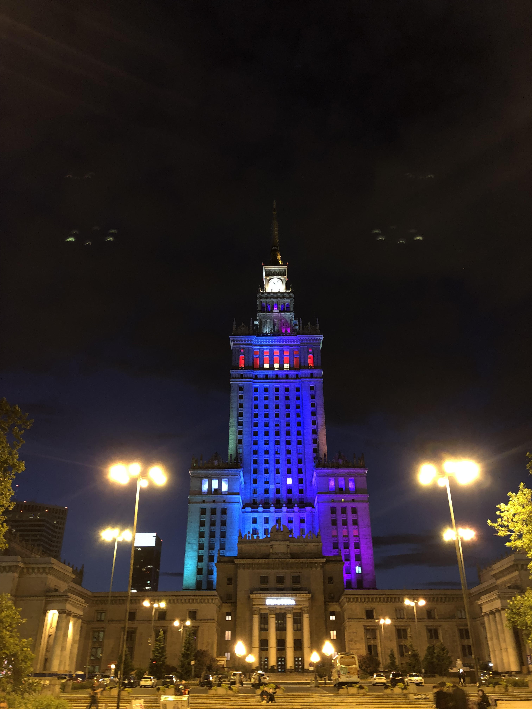
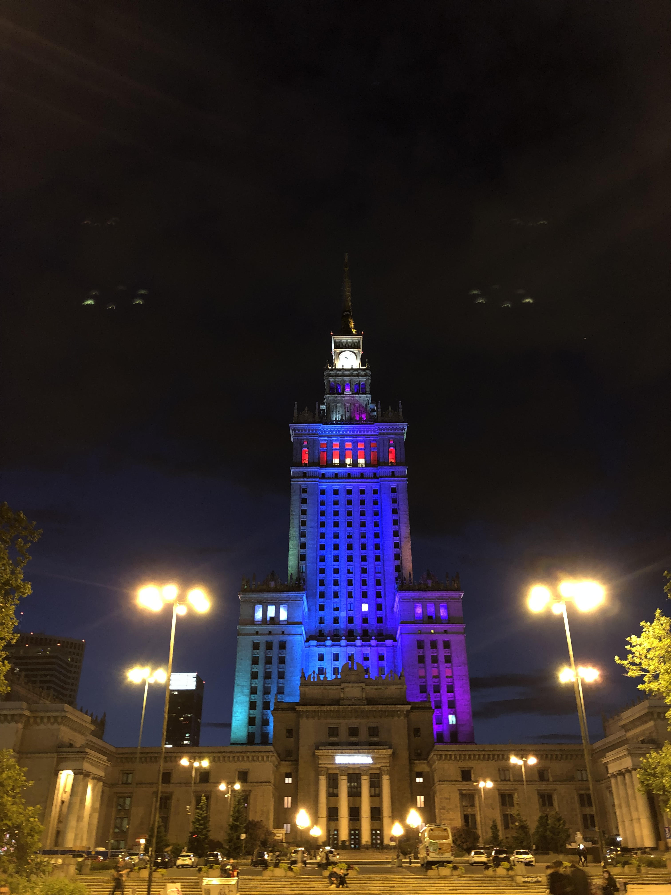

Warsaw - Poland
Conhecida por lembranças cinzentas de ocupação soviética e domínio nazi, a capital polaca, Varsóvia, não podia falhar na nossa lista de sítios a visitar. A curiosidade de ambos pela história da Polónia para uma melhor descoberta e integração a quando da sua visita, levou-nos a estudar um pouco acontecimentos do passado o que acabou por se revelar positivo; tal foi o impacto com a chegada. Há cerca de 100 anos a cidade de Varsóvia encontrava-se completamente demolida, e o crescimento que num período de tempo tão curto obteve, tornou-a numa cidade que soube reunir de uma forma harmoniosa o diálogo entre o passado e o moderno. Arranha céus luminosos, e outros ainda em construção a um ritmo frenético, Varsóvia é vista como a cidade mais industrializada, e acolhendo no seu seio grandes empresas de nível mundial.
Felizmente, houve também oportunidade em âmbito de Erasmus de desenvolver um trabalho da realização de um vídeo da celebração do 2º aniversário da empresa J-Labs. Em dois dias que tivemos para visitar a cidade tivemos a oportunidade de assistir a um concerto de ópera que estava a decorrer junto do Palácio Presidencial (Palac Prezyoencki) que sobreviveu à Insurreição de Varsóvia. Houve ainda a oportunidade de passar pelo museu do Comunismo, e de ver ainda a Old Town (Stare Miastro), que possui um caminho que vai do Castelo Real até o Palácio de Wilanów.
 
